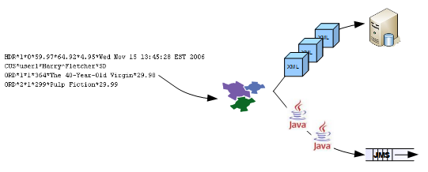

Smooks is an extensible framework for building applications for processing XML and non XML data (CSV, EDI, Java etc) using Java.
To use Smooks, simply add the following dependency to your project.
<dependency>
<groupId>org.milyn</groupId>
<artifactId>milyn-smooks-all</artifactId>
<version>1.7.0</version>
</dependency>
See Maven Central for a list of available versions.
What can it be used for?
While Smooks can be used as a lightweight platform on which to build your own custom processing logic (for a wide range of data formats “out of the box”), it comes with some very useful features that can be used individually, or seamlessly combined together.
Java Binding
Populate a Java Object Model from a data source (CSV, EDI, XML, Java etc). Populated object models can be used as a transformation result itself, or can be used by (e.g.) Templating resources for generating XML or other character based results. Also supports Virtual Object Models (Maps and Lists of typed data), which can be used by EL and Templating functionality.

Transformation
Perform a wide range of Data Transforms - XML to XML, CSV to XML, EDI to XML, XML to EDI, XML to CSV, Java to XML, Java to EDI, Java to CSV, Java to Java, XML to Java, EDI to Java etc.

Huge Message Processing
Process huge messages (GBs) - Split, Transform and Route message fragments to JMS, File, Database etc destinations.

Message Enrichment
Enrich a message with data from a Database, or other Datasources.